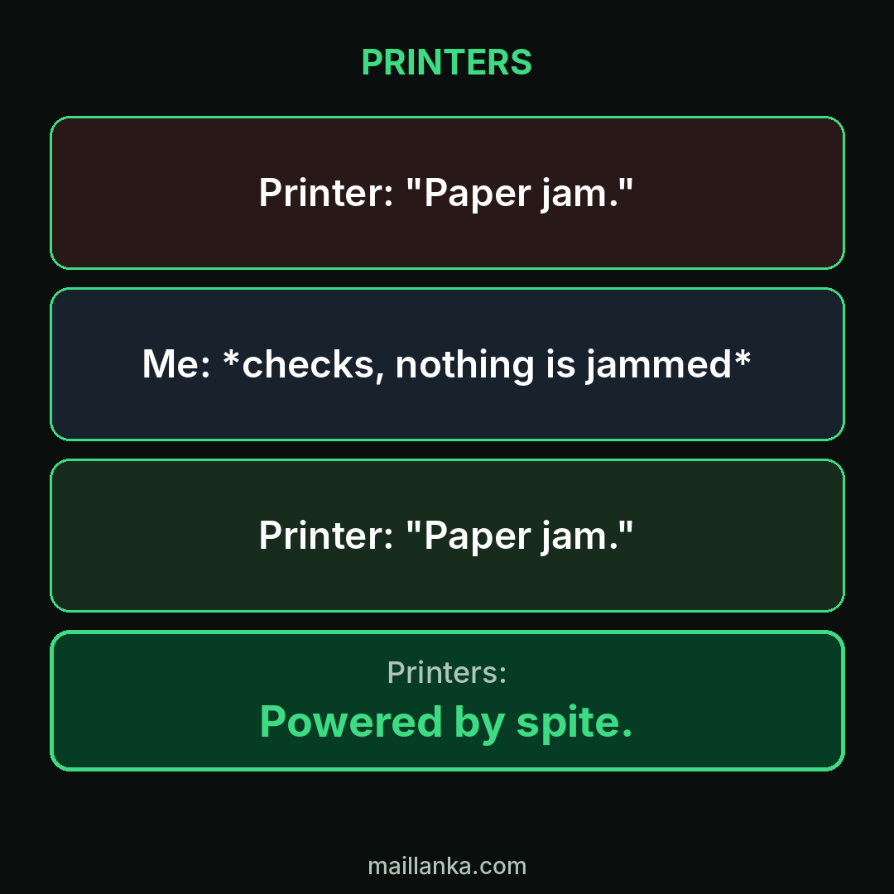
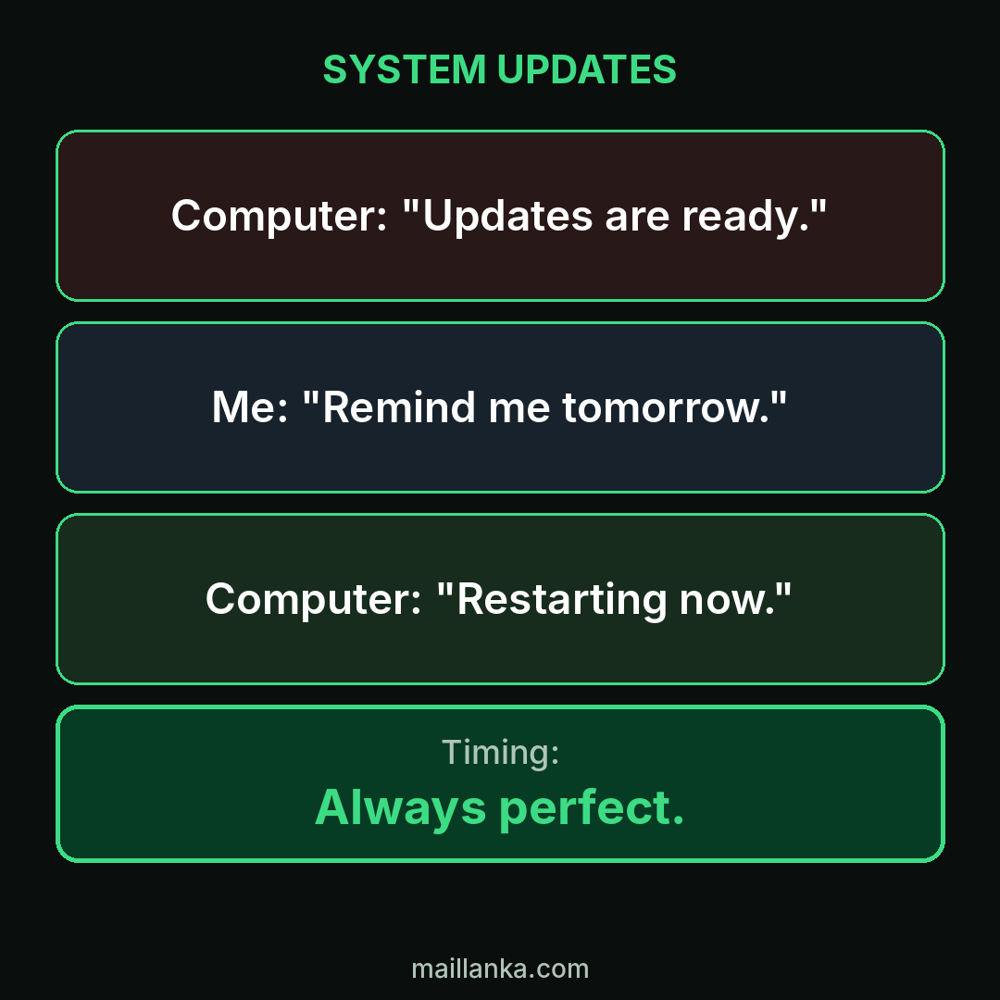
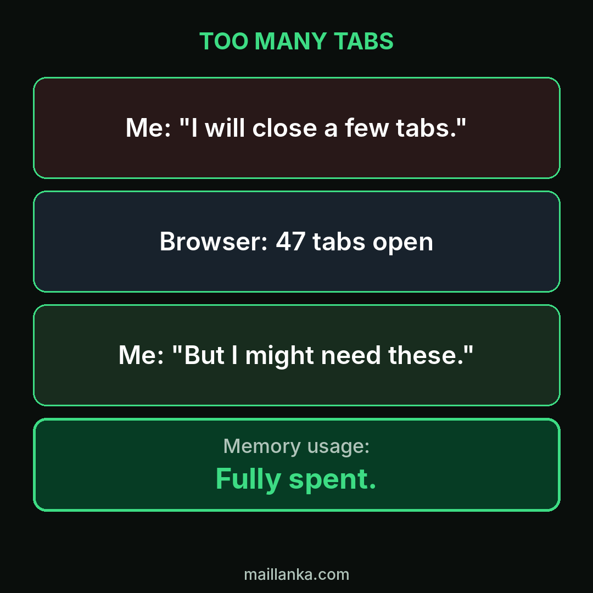
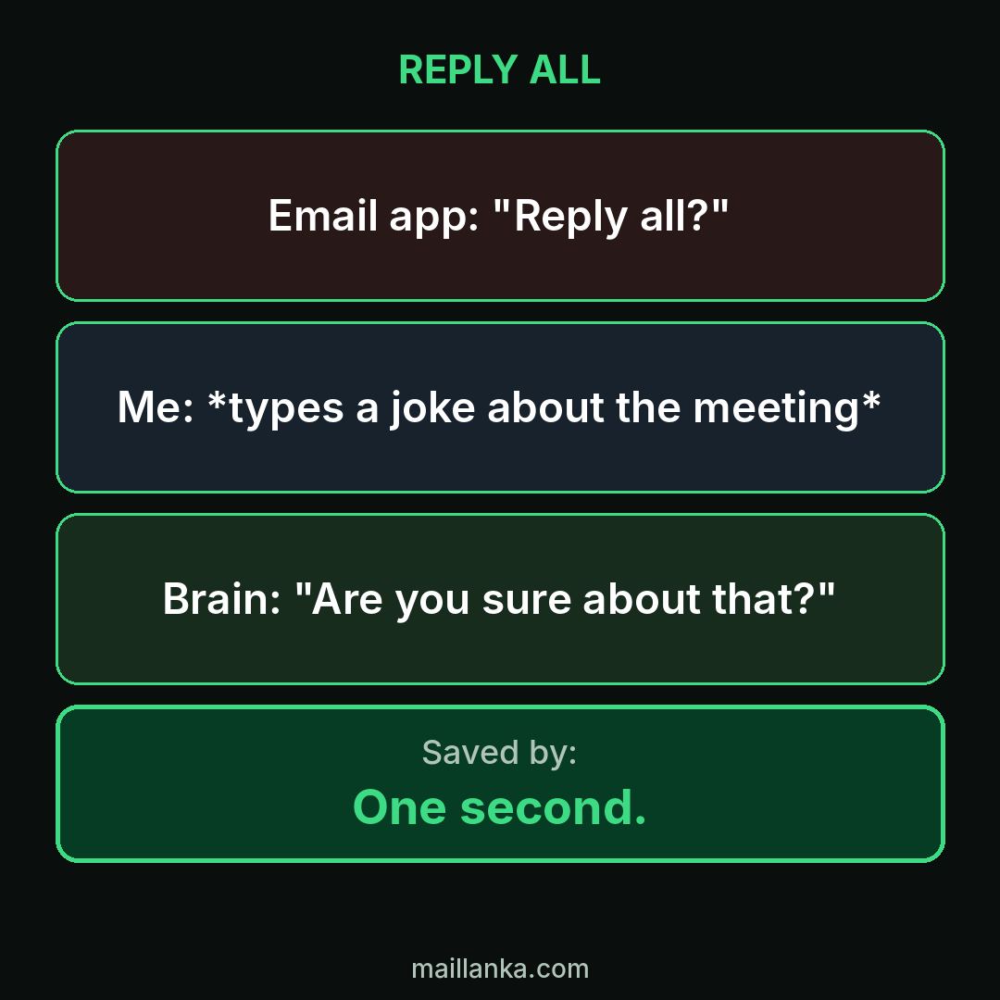
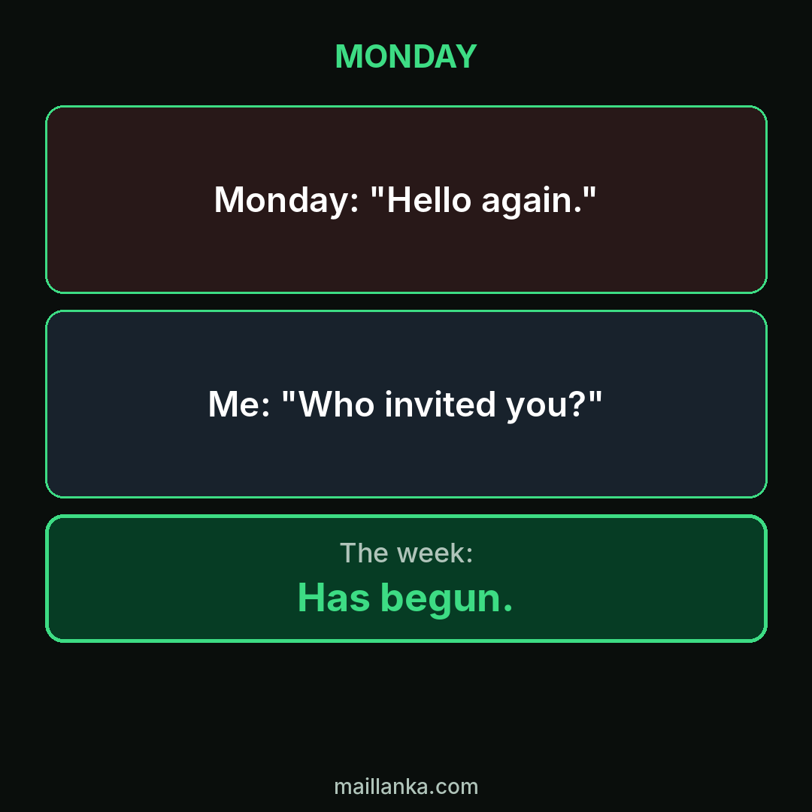
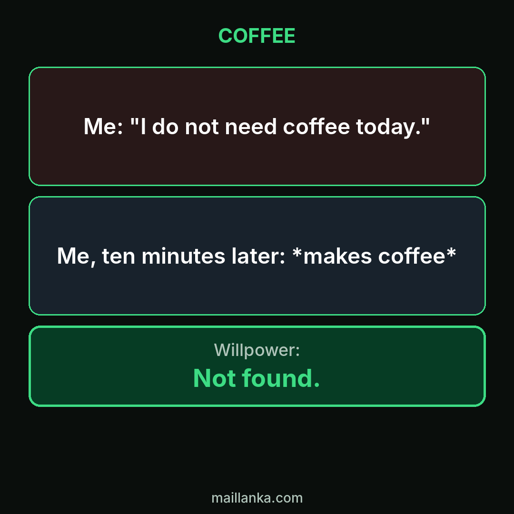
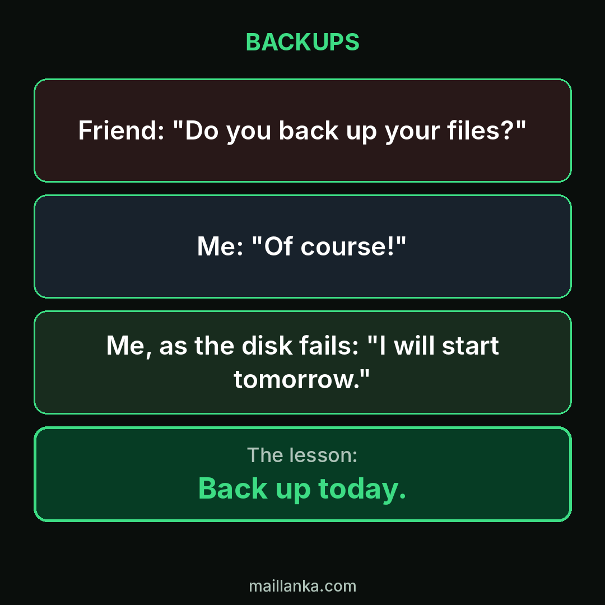
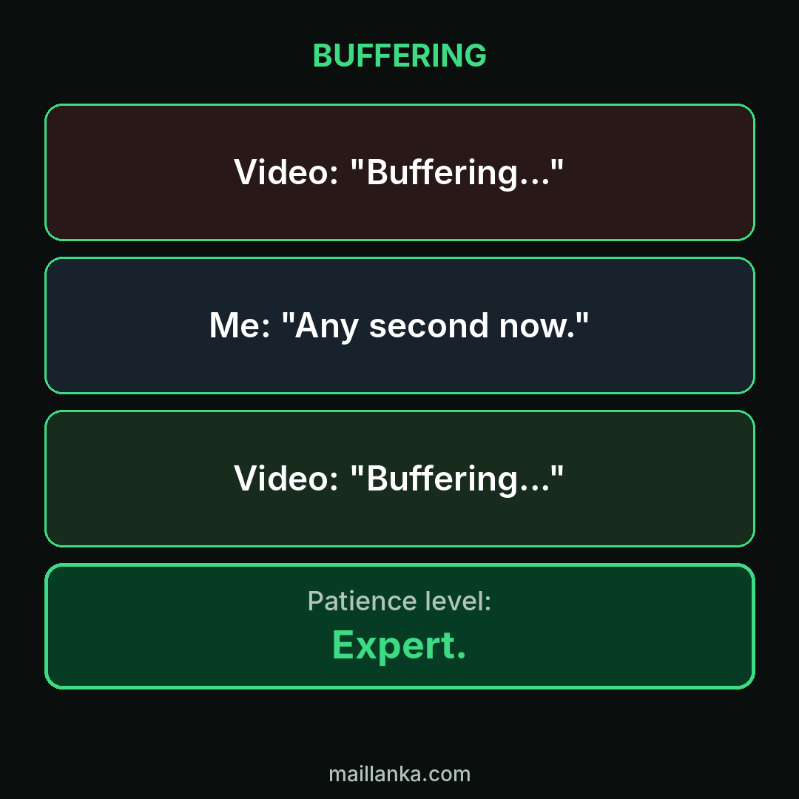

Original memes
Every meme here is made from scratch with original text and layouts. Each one has a short note on the joke. New memes are added regularly.
Me, The It Guy

The classic first question in IT support, and it works more often than anyone admits.
Every Morning

Five more minutes is the most optimistic phrase in the language.
9 Pm, A Promise

Some plans are made in the evening and forgotten at the fridge.
Wi-Fi Logic

Connected to the router does not always mean connected to the internet.
Creating A Password

Password rules are a daily test of creativity.
1% Battery

Living on one percent battery is a lifestyle for some of us.
The Quick Sync

Meetings that promise five minutes rarely keep the promise.
Developer Vs Client

A classic line in software, and a classic reply.
Printers

Printers have a special talent for errors no one can find.
System Updates

The update that waits for the worst possible moment.
Too Many Tabs

A tab is a promise you never intend to keep.
Reply All

The pause before pressing Send has saved many careers.
Monday

Every week starts the same way.
Coffee

Some promises do not survive the morning.
Backups

The best time to back up is before you need to.
Buffering

Waiting for a video to load builds character.